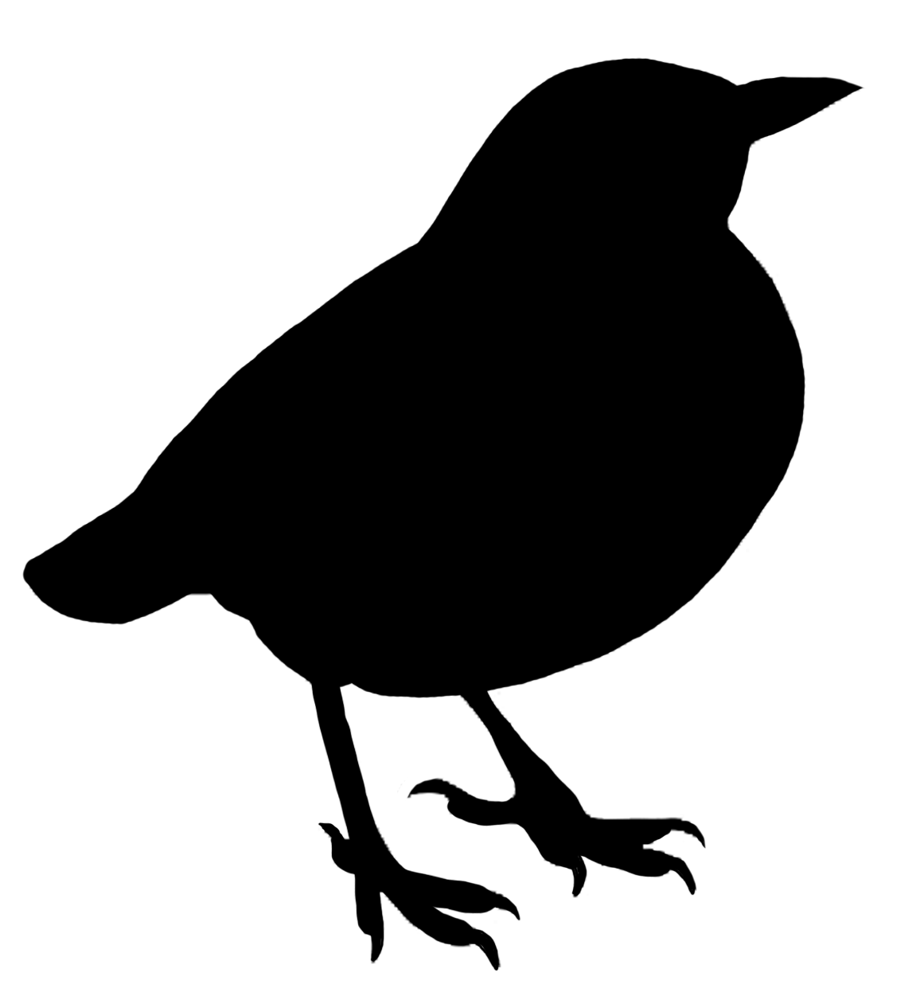

DISTINTAS ESPECIES DE AVES 
Los Cuervos
El cuervo, o corvus corax, es una especie de ave perteneciente a la familia de los corvus. Son aves de tamaño medio-grande y con un característico plumaje negro, como el carbón, con brillos azules a la luz solar. El cuervo se caracteriza por presentar un plumaje negro lustroso, las plumas de su garganta son duras, su pico es muy fuerte y también negro. La cola es alargada y en forma de cuña. La longitud de esta ave es de 50 a 63 cm, el peso varía de 950 a 1300 gramos.
